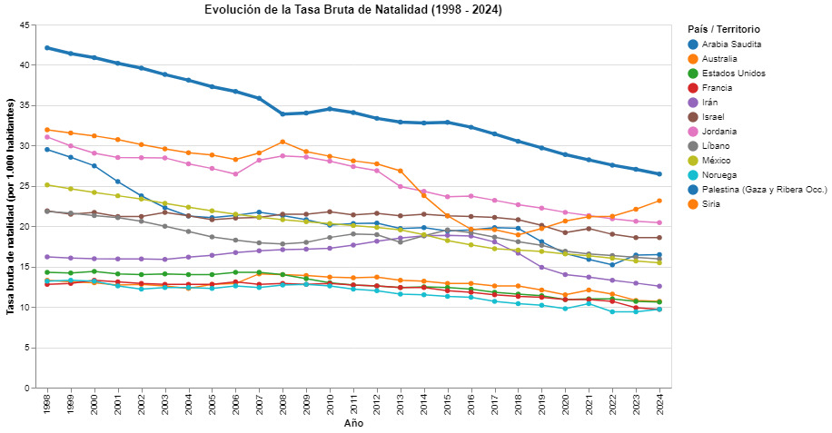

El riesgo de venir al mundo en medio del colapso
Nacer siempre ha significado llegar a un lugar donde exista una estructura familiar y un sistema de salud capaz de brindar atención básica. En la Franja de Gaza, desde octubre de 2023 en adelante, el proceso de gestación y parto se transformó en una situación de alto riesgo. Las acciones militares no solo han provocado miles de fallecimientos en un breve período, sino que desmantelaron casi en su totalidad la infraestructura sanitaria indispensable para la supervivencia de los recién nacidos durante sus primeros días.
Un quiebre histórico en la curva de la vida
Al examinar la visualización de los últimos 25 años, que registra la tasa de nacimientos por cada mil habitantes, se observa un cambio claro en la línea gruesa azul correspondiente a Palestina. A finales de la década de 1990, los territorios palestinos registraban cerca de 42 nacimientos por cada mil personas, posicionándose en la cima de los países analizados. Con el transcurso de los años esta cifra descendió de forma progresiva, siguiendo una transición demográfica habitual que también se aprecia en las series de países vecinos como Jordania, Siria o Arabia Saudita.
Entre los años 2022 y 2024 la caída en el gráfico se acentúa de manera considerable hasta alcanzar los 26,5 nacimientos por cada mil habitantes, el nivel más bajo de todo el registro histórico.
La trayectoria de las tasas de natalidad (1998-2024)
El siguiente registro gráfico expone el comportamiento de la tasa de natalidad en Palestina frente a los indicadores de la región y el contexto internacional durante el último cuarto de siglo:

La brecha inevitable: cuando nacer depende del entorno
Este descenso en la gráfica no responde a una simple decisión de planificación familiar, sino al deterioration extremo de las condiciones de vida. La mayoría de los centros hospitalarios se encuentran fuera de servicio o destruidos por los bombardeos, existe un desabastecimiento severo de insumos médicos, cortes continuos de energía eléctrica y escaso personal médico disponible para atender partos o emergencias obstétricas. Ocurrir un nacimiento en este contexto implica un riesgo directo para la vida de las madres y de los neonatos.
Al comparar la trayectoria de Palestina con las demás líneas regionales e internacionales del gráfico, la diferencia resulta evidente. Mientras que en países de referencia como Francia, Estados Unidos o Noruega las tasas permanecen estables en la franja inferior (entre 10 y 14 nacimientos por mil), en Palestina se aprecia un quiebre pronunciado derivado del colapso sanitario. Sin establecimientos operativos ni atención médica esencial, la maternidad enfrenta un escenario sumamente adverso que afecta de manera directa a las mujeres en edad reproductiva y deja a los recién nacidos en una posición de vulnerabilidad.
Hospitales bajo fuego y la interrupción del futuro
El quiebre de esta tendencia coincide territorialmente con los 795 ataques a 42 hospitales y los 71 cierres de centros de salud registrados principalmente en Gaza Norte y Gaza City. Asimismo, según la base de datos Killed in Gaza, este escenario ha dejado un saldo de 72.835 víctimas totales, entre las que se cuantifican 2.124 recién nacidos de 0 a 364 días y 10.946 mujeres en edad reproductiva de 15 a 49 años.